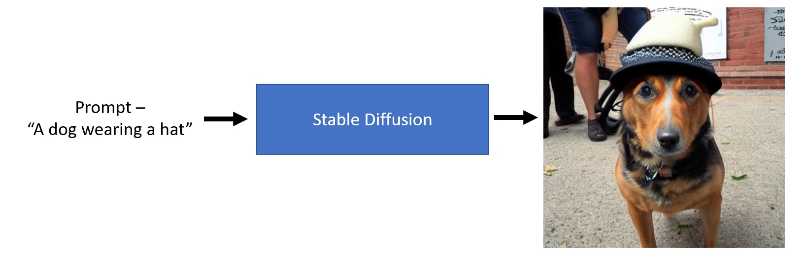
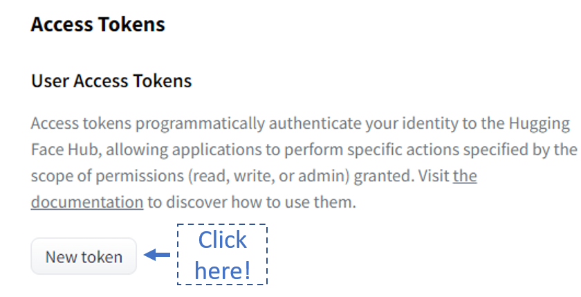
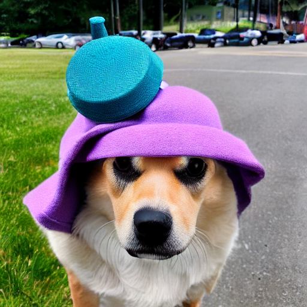

This is my first post of the Stable diffusion series, which I will write on Stable diffusion and other ongoing research happening in this field. Most of my learning can be attributed to knowledge acquired while doing the ‘From Deep learning foundations to Stable Diffusion’ course by FastAI and supplementing this with my research. The first few lessons of the FastAI course are publicly available here, and the rest will become available in early 2023. In this post, I want to give a brief introduction of how to use setup the 🤗 diffusion library and start generating images on your own. Next post, we will do a deep dive into mid-level components of this library.
1 Introduction
Stable diffusion simply put is a deep learning model which can generate an image given a textual prompt.

Fig. 1: Stable diffusion overview
As we can see from the image above we can pass a textual prompt like “A dog wearing a hat” and a stable diffusion model can generate an image representative of the text. Pretty amazing!
2 Using Hugging face Diffuser library
As with any python library, we need to follow certain installation steps before we can run it, here is a rundown of these steps.
2.1 Accepting the license
Before using the model, you need to go here and log in using your Hugging face account and then accept the model license to download and use the weights.
2.2 Token generation
If this is your first time using the hugging face library this might sound like a weird step. You need to go here and generate a token (preferably with write access) to download the model.

Fig. 2: Access token page
Once you have generated the token copy it. First, we will download the hugging face hub library using the following code.
!pip install huggingface-hub==0.10.1
Requirement already satisfied: huggingface-hub==0.10.1 in /home/aayush/miniconda3/envs/fastai/lib/python3.9/site-packages (0.10.1)
Requirement already satisfied: filelock in /home/aayush/miniconda3/envs/fastai/lib/python3.9/site-packages (from huggingface-hub==0.10.1) (3.8.0)
Requirement already satisfied: tqdm in /home/aayush/miniconda3/envs/fastai/lib/python3.9/site-packages (from huggingface-hub==0.10.1) (4.64.1)
Requirement already satisfied: typing-extensions>=3.7.4.3 in /home/aayush/miniconda3/envs/fastai/lib/python3.9/site-packages (from huggingface-hub==0.10.1) (4.3.0)
Requirement already satisfied: packaging>=20.9 in /home/aayush/miniconda3/envs/fastai/lib/python3.9/site-packages (from huggingface-hub==0.10.1) (21.3)
Requirement already satisfied: requests in /home/aayush/miniconda3/envs/fastai/lib/python3.9/site-packages (from huggingface-hub==0.10.1) (2.28.1)
Requirement already satisfied: pyyaml>=5.1 in /home/aayush/miniconda3/envs/fastai/lib/python3.9/site-packages (from huggingface-hub==0.10.1) (6.0)
Requirement already satisfied: pyparsing!=3.0.5,>=2.0.2 in /home/aayush/miniconda3/envs/fastai/lib/python3.9/site-packages (from packaging>=20.9->huggingface-hub==0.10.1) (3.0.9)
Requirement already satisfied: urllib3<1.27,>=1.21.1 in /home/aayush/miniconda3/envs/fastai/lib/python3.9/site-packages (from requests->huggingface-hub==0.10.1) (1.26.12)
Requirement already satisfied: certifi>=2017.4.17 in /home/aayush/miniconda3/envs/fastai/lib/python3.9/site-packages (from requests->huggingface-hub==0.10.1) (2022.9.24)
Requirement already satisfied: charset-normalizer<3,>=2 in /home/aayush/miniconda3/envs/fastai/lib/python3.9/site-packages (from requests->huggingface-hub==0.10.1) (2.0.4)
Requirement already satisfied: idna<4,>=2.5 in /home/aayush/miniconda3/envs/fastai/lib/python3.9/site-packages (from requests->huggingface-hub==0.10.1) (3.4)
Then use the following code, once you run it a widget will appear, paste your newly generated token and click login.
from huggingface_hub import notebook_loginnotebook_login()
Login successful
Your token has been saved to /home/aayush/.huggingface/token
Authenticated through git-credential store but this isn't the helper defined on your machine.
You might have to re-authenticate when pushing to the Hugging Face Hub. Run the following command in your terminal in case you want to set this credential helper as the default
git config --global credential.helper store
2.3 Installing diffuser and transformer library
Once this process is done, install the dependencies using the following code. This will download the latest version of the diffusers and transformers library.
!pip install -qq -U diffusers transformers
That’s it, now we are ready to use the diffusers library.
3 Running Stable Diffusion
The first step is to import the StableDiffusionPipeline from the diffusers library.
from diffusers import StableDiffusionPipeline
The next step is to initialize a pipeline to generate an image. The first time you run the following command, it will download the model from the hugging face model hub to your local machine. You will require a GPU machine to be able to run this code.
Now let’s pass a textual prompt and generate an image.
# Initialize a promptprompt ="a dog wearing hat"# Pass the prompt in the pipelinepipe(prompt).images[0]
Fig 3 - An example of image generated by the diffuser pipeline.

For further information on the diffusion pipeline read the documentation here.
4 Conclusion
In this post, we saw how to install diffusers library from hugging face and use the Stable diffusion model to generate images using a textual prompt. Read the part 2 here.
I hope you enjoyed reading it, and feel free to use my code and try it out for generating your images. Also, if there is any feedback on the code or just the blog post, feel free to reach out on LinkedIn or email me at aayushmnit@gmail.com.